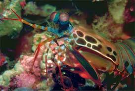

Fatos sobre o Stomatopoda
Fatos sobre Stomatopoda
O camarão mantis não é um camarão e, exceto pelo fato de ser um artrópode, também não está relacionado ao louva-deus. Em vez disso, os camarões mantis são 500 espécies diferentes pertencentes à ordem Stomatopoda. Para distingui-los do camarão verdadeiro, os camarões mantis são chamados às vezes de estomatoópodes.
Fatos interessantes sobre Stomatopoda
Camarões Mantis são conhecidos por suas garras poderosas, que eles usam para espancar ou esfaquear suas presas. Além de seu método de caça feroz, os camarões mantis também são conhecidos por seu extraordinário senso de visão.

Seu soco
São capazes de desferir um dos mais rápidos e violentos golpes do reino animal, seu soco fora registrado com uma velocidade de 80 km/h e aceleração similar a uma arma calibre .22.